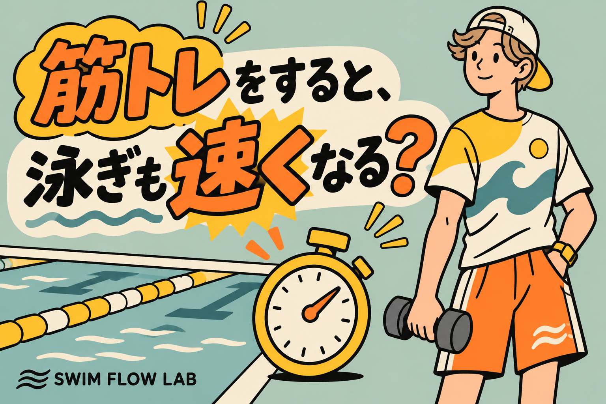

SWIMMING RESEARCH / 27
筋トレをすると、泳ぎも速くなる？
「出せる力」と「水の中の速さ」を、別々に確かめる
2026年11月17日 公開

昨日より重い物を持ち上げられた。腕に力がついた気がする。それなら、次のプールでは速く泳げるはず——そんな期待をしたことはありませんか。
筋力をつける練習が泳ぎの助けになることはあります。でも「力が増えた」と「泳ぎが速くなった」は、同じ報告ではありません。今日は二つを混ぜずに見て、筋トレを自分の練習のどこに置くかを考えます。
重い物を持てた。それは何ができた証拠？
買い物の袋を、前より楽に持てるようになったとします。それはうれしい変化です。ただ、その袋を持てたことだけで、プールの端から端まで何秒で泳げるかは分かりません。水の中では、水を押す動き、身体の姿勢、呼吸、腕と脚の組み合わせなどが一緒に働くからです。
力と泳ぎは、違う物差し
決めた動作で出せる力
決めた距離を泳ぐ時間
陸上で出す力と、決めた距離を泳ぐ時間を異なる検査として描く。
ここでいう筋力は「筋肉で力を出す能力」のこと。研究では、決められた動作や器具を使って測ります。一方、泳ぎの成績は、決めた距離を泳ぐ時間や速さなどで確かめます。物差しが違うので、一方の数字をもう一方の答えに置き換えることはできません。
図の左は力を調べる器具、右は泳ぐ区間と時計です。どちらも大切ですが、答える質問が違います。「力を出せるようになったかな」と「その力が泳ぎの記録につながったかな」。この二つの質問を持つことが、研究を読む入り口になります。
筋トレを否定するための区別ではありません。変化をきちんと喜び、まだ分からないことは次に確かめる。そのために、二枚の記録を分けて持ちます。
同じ泳ぐ練習に、何を足した研究なのか
Giroldらは、地域から全国レベルの競泳選手21人を、7人ずつの三つのグループに分けました。期間は12週間。三つのグループとも、基本となる水泳とランニングの練習を行い、追加する運動を変えました。Giroldらの原著は、その組み合わせを比べた研究です。
共通の練習に、違う運動を追加
共通の条件
7人
7人
7人
全員共通の水泳・ランニング練習に、3群各7人で異なる運動を加えた。
一つ目は陸上での筋力トレーニング。二つ目は、水中でゴムの抵抗や補助を使う短い距離の練習。「抵抗」は進むのを妨げること、「補助」は進むのを助けることです。三つ目は比較のための自転車運動です。「筋トレだけをした人」と「何もしていない人」を比べた研究ではありません。三つとも泳ぐ練習を続けています。
参加したのは競泳の経験がある選手です。泳ぎを習い始めた子や、週に一度だけ泳ぐ大人を直接調べたわけではありません。図は研究の組み分けを示しており、家で同じ器具や回数をまねするためのメニューではありません。
料理で考えると、土台のスープがあり、加える材料を変えて比べたようなものです。材料だけを皿に置いても、同じ料理にはなりません。「泳ぐ練習と組み合わせた」という土台を、結果を読むときにも忘れずにおきます。
筋力と泳ぎの両方を、前後で確かめた
研究では、肘を曲げ伸ばしする筋肉の力と、50mを全力でクロールで泳ぐ成績などを、別々に調べました。開始前、6週間後、12週間後という時点で測っています。図では、それぞれの測定時点に「力」と「50m泳」の二つを並べています。力が増えたから泳ぎもよくなったはず、と読み飛ばさず、別々の結果を確かめるのがポイントです。
同じ時点で、二つの検査
- 1開始前
力と50m泳を測る
- 26週間後
同じ検査で確認する
- 312週間後
それぞれの変化を見る
開始前・6週後・12週後に、力と50m泳をそれぞれ測る。図は記録の伸び方ではない。
12週間後には、陸上の筋トレ群と水中の抵抗・補助群で、泳ぐ速さの改善が報告されました。筋力にも、検査条件に応じた改善が見られました。ただし二つの群の泳成績の間に、統計的にはっきりした差は確認されませんでした。つまり、この研究だけで「陸上の筋トレのほうが水中練習より優れている」と決めることはできません。
「はっきりした差が確認されない」は、「全員の結果が同じ」でも「二つが完全に同等」でもありません。各群7人の研究なので、個人の違いや、別の練習条件での違いまで決着したわけではないのです。平均として改善したという結果も、参加者全員や、読者全員の記録更新を保証しません。
6週間の時点では変化が確認されませんでしたが、これを「必ず12週間続ければ速くなる」という期限にしてはいけません。研究で測った時点と、自分の身体に変化が出る時点は、同じとは限らないからです。
「どの筋トレが一番？」より先に、泳ぎの目的を決める
競泳選手の筋力トレーニングをまとめたFoneとvan den Tillaarのレビューでも、あらゆる選手にとって最善の方法が一つに決まったわけではありません。筋トレを取り入れる話と、泳ぐ練習をやめてよいという話は別です。
目的から、確かめ方へ
- 1目的を話す
どんな泳ぎを目指す？
- 2運動を相談する
経験や年齢に合う内容は？
- 3別々に確かめる
力と泳ぎはどう変わった？
泳ぎの目的を決め、力の結果と泳ぎの結果を別々に確認する。
では、自分は何から考えればよいでしょう。「とにかく筋肉を増やしたい」だけでなく、「何のために泳ぎを変えたいか」を言葉にしてみます。短い距離の記録なのか、今の練習を無理なく続けることなのか。目的が違えば、確かめたい結果も変わります。
この記事からの提案は、指導者に「追加する運動では何をよくしたいのか」「泳ぎでは何を確認するのか」の二つを聞くことです。子どもなら、重さや回数を自分で決める前に、年齢や経験に合う実施方法を指導者と相談します。研究に出てくる重い負荷やゴムを使う練習を、そのまま家庭やプールで再現する必要はありません。
試す内容が決まったら、泳ぐ距離、泳法、開始の方法、直前の休み方をそろえて振り返ります。毎回全力で記録を更新しようとするのではなく、指導者と確かめる日を決めておく。力の変化と泳ぎの変化を別々に見てから、続けるか、内容を変えるかを考えます。
研究から分かったこと
- 研究の目的
- 追加する筋力練習が泳成績につながるかを調べる。
- 何を比べたか
- 同じ基本練習に、陸上筋トレ・水中抵抗と補助・自転車を追加した3群。
- 何が分かったか
- 12週後、陸上筋トレ群と水中練習群で泳速度が改善。両群の優劣は明確にならなかった。
- この記事の答え
- 筋トレは泳ぐ練習を支える候補だが、全員への効果や唯一の最善策を保証しない。
陸上で出せる力と、水の中で進む速さは、別々に確かめる必要があります。今回の研究では筋トレを加えた群で泳速度も改善しましたが、筋トレだけの効果を、誰にでもそのまま約束する結果ではありません。「力が増えた」と「泳ぎが速くなった」の二つを分けて記録する。それが、この研究を読み違えないための出発点です。
参考文献と確認範囲
- Girold S et al. 2007. Effects of dry-land vs. resisted- and assisted-sprint exercises on swimming sprint performances.
抄録および原著PDFの方法・結果・表を確認。21人、12週間。
- Fone L, van den Tillaar R. 2022. Effect of Different Types of Strength Training on Swimming Performance in Competitive Swimmers: A Systematic Review.
抄録と結論を確認。27研究の整理。原著と重複する証拠を独立に数えていない。